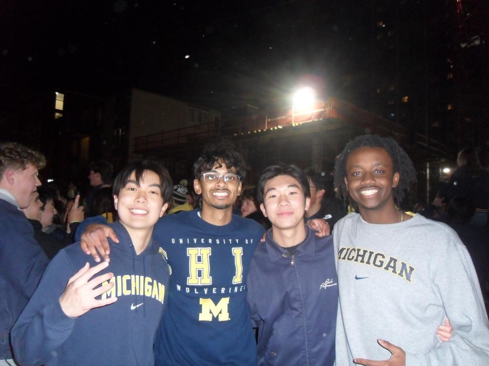
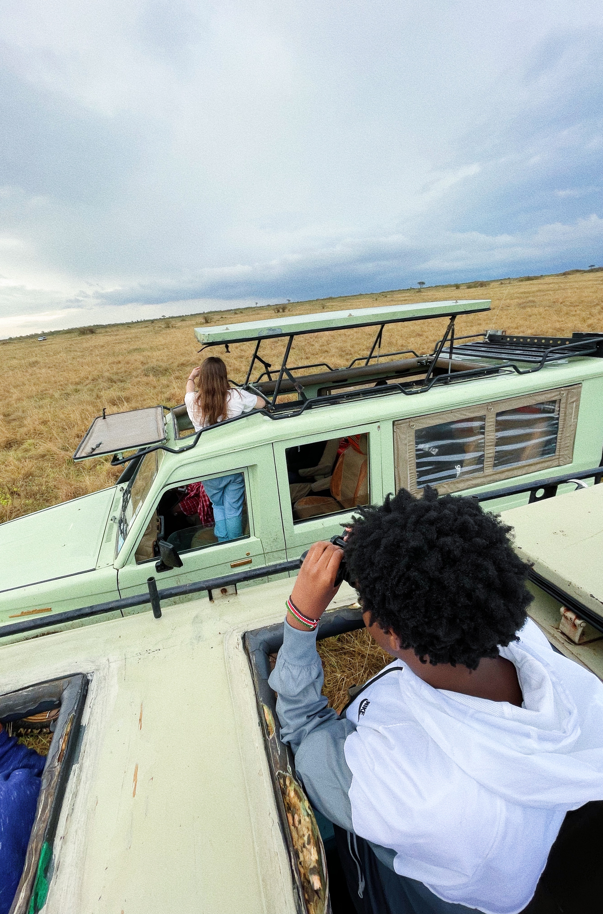
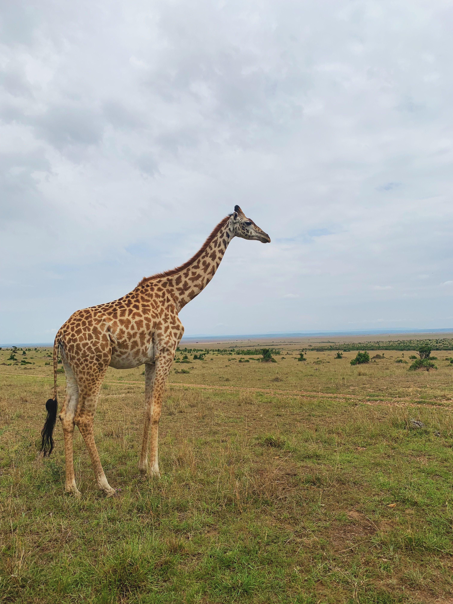
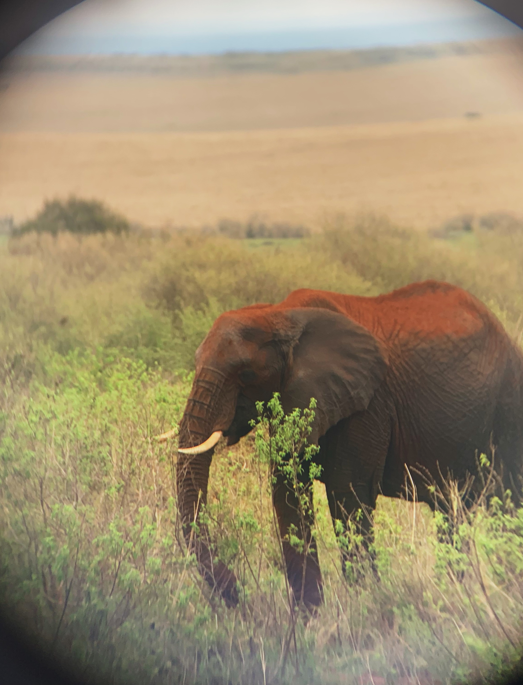
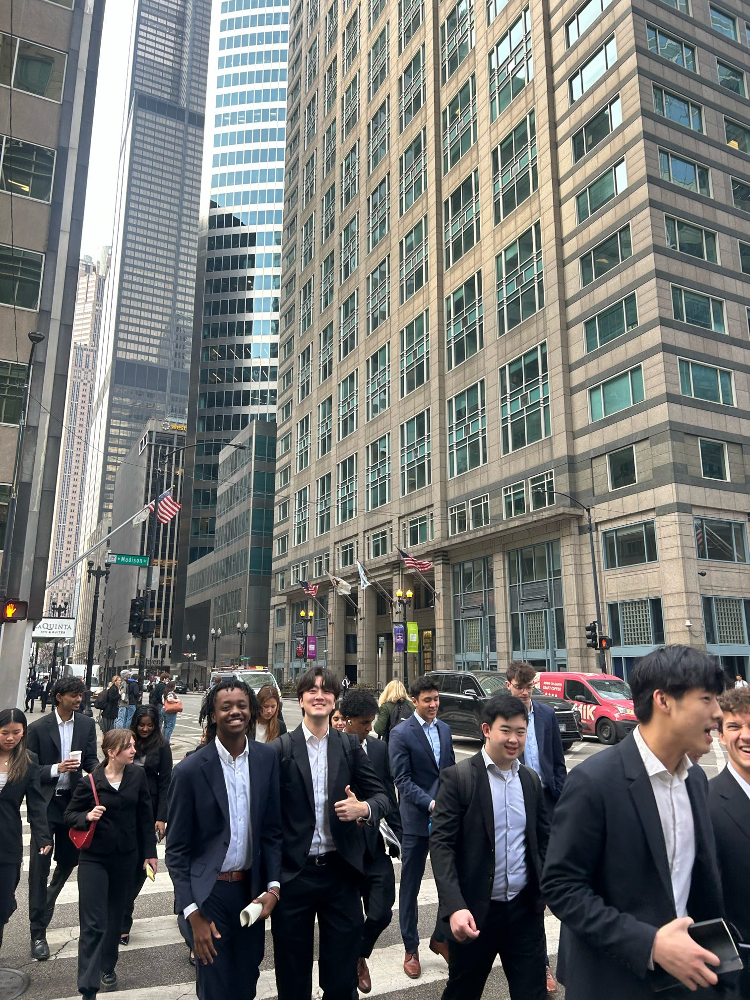

Sports · Music · Film · Everything else
Personal
What I do when I am not in a meeting or writing a memo.
What I play
I play futsal and pickup soccer as a defensive midfielder. Sergio Busquets is the player I study most: positioning, reading the game two passes ahead, making the team function without ever needing the spotlight. On the basketball court I am a pass-first point guard in the Chris Paul mold. My intramural team won the championship in Spring 2026.

What I watch
Die-hard Detroit Pistons and Lions fan, which builds a specific kind of character. I back Arsenal in the Premier League. And I am at every Michigan home game I can get to.


What I am listening to
Afrobeats, hip-hop, and R&B, mostly. I have about 35 records and I DJ a little. Below is my topster, which is the closest thing I have to a permanent record of my taste.

What I am watching
Psychological thrillers and science fiction, mostly things worth arguing about after the credits. Arrival, Parasite, Prisoners, Oldboy, The Prestige, Blade Runner 2049. I log everything on Letterboxd.
Open my LetterboxdWhat I am reading
Malcolm Gladwell is the author I keep coming back to, especially Outliers, David and Goliath, and The Tipping Point. Beyond him I read at the intersection of policy, economics, and society, which is a long way of saying I like books that explain why systems behave the way they do.
Heritage
Kenyan-American, raised in Metro Detroit by parents from Kenya. I am teaching myself Kikuyu, my family's language. Co-founding EASA was partly about building the community I wanted to find when I got here.
Thrifting
Most of my closet comes from Salvation Army, Goodwill, and local thrift spots. Better for the budget, and it turns up more interesting pieces than buying new ever has.
Causes
Education policy, ESG, accessible healthcare, urban development, childcare access, and racial justice. These are the issues I want my career to actually connect to, not just reference.
Quirks
I write down every dream I remember. I listen to one song on repeat while working, the same song, for hours. I play the NYT games and sports trivia daily.
Masai Mara, Kenya is my favorite trip I have taken.






